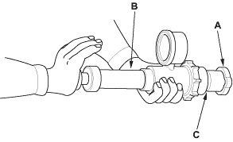
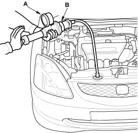

- Remove the radiator cap (A), wet its seal with engine coolant, then install it on the pressure tester (B) (commercially available). Use a small adapter H-901122-09 (C) (commercially available) to install the radiator cap.

- Apply a pressure of 93 - 123 kPa (0.95 - 1.25 kgf/cm2, 14 - 18 psi).
- Check for a drop in pressure.
- If the pressure drops, replace the cap.

- Wait until the engine is cool, then carefully remove the radiator cap and fill the radiator with engine coolant to the top of the filler neck.
- Attach the pressure tester (A) (commercially available) to the radiator. Use a small adapter H-901122-09 (B) (commercially available) to attach the pressure tester.

- Apply a pressure of 93 - 123 kPa (0.95 - 1.25 kgf/cm2, 14 - 18 psi).
- Inspect for engine coolant leaks and a drop in pressure.
- Remove the tester and reinstall the radiator cap.
- Check for engine oil in the coolant and/or coolant in the engine oil.